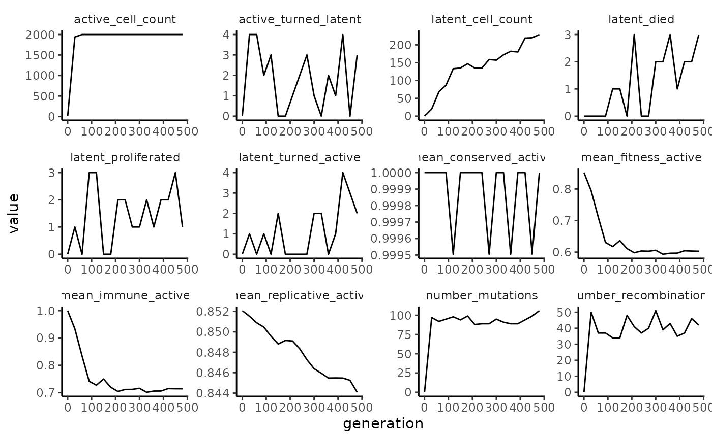

Analyze wavess output
analyze_output.RmdIn this vignette, we’ll provide various ways to analyze the output of
run_wavess(). Note that many of these functions can also be
used to analyze real-world empirical data.
For simulated data, we highly recommend comparing the output to empirical data, or at least using your domain knowledge to determine whether the output seems reasonable. If it doesn’t, you may have to tweak various input parameters to get believable outputs. The default input parameters we provide generally lead to a reasonable output for HIV, but even so, due to the stochastic nature of the model, some outputs look more like real data than others.
Run wavess
First, let’s load the relevant libraries, set the default plotting
theme, and run wavess including all the selective pressures. We’re going
to set a seed for reproducibility. For more details on the input and
running wavess, please see the respective vignettes.
(vignette("prepare_input_data") and
vignette("run_wavess")). If you haven’t checked out those
vignettes first, be sure to at least run the
create_python_venv() function prior to running the below
code, or else you’ll get an error telling you to do so.
library(wavess)
library(dplyr)
#>
#> Attaching package: 'dplyr'
#> The following objects are masked from 'package:stats':
#>
#> filter, lag
#> The following objects are masked from 'package:base':
#>
#> intersect, setdiff, setequal, union
library(ggplot2)
library(tidyr)
library(ape)
#>
#> Attaching package: 'ape'
#> The following object is masked from 'package:dplyr':
#>
#> where
library(phangorn)
library(ggtree)
#> ggtree v3.16.0 Learn more at https://yulab-smu.top/contribution-tree-data/
#>
#> Please cite:
#>
#> Guangchuang Yu, David Smith, Huachen Zhu, Yi Guan, Tommy Tsan-Yuk Lam.
#> ggtree: an R package for visualization and annotation of phylogenetic
#> trees with their covariates and other associated data. Methods in
#> Ecology and Evolution. 2017, 8(1):28-36. doi:10.1111/2041-210X.12628
#>
#> Attaching package: 'ggtree'
#> The following object is masked from 'package:ape':
#>
#> rotate
#> The following object is masked from 'package:tidyr':
#>
#> expand
set.seed(1234)
theme_set(theme_classic() +
theme(strip.background = element_rect(color = "white")))
# if needed
create_python_venv()
#> Using Python: /usr/bin/python3.12
#> Creating virtual environment 'r-wavess' ...
#> + /usr/bin/python3.12 -m venv /home/runner/.virtualenvs/r-wavess
#> Done!
#> Installing packages: pip, wheel, setuptools
#> + /home/runner/.virtualenvs/r-wavess/bin/python -m pip install --upgrade pip wheel setuptools
#> Installing packages: numpy
#> + /home/runner/.virtualenvs/r-wavess/bin/python -m pip install --upgrade --no-user numpy
#> Virtual environment 'r-wavess' successfully created.
#> Using virtual environment 'r-wavess' ...
#> + /home/runner/.virtualenvs/r-wavess/bin/python -m pip install --upgrade --no-user scipy
#> Installation of scipy version 1.15.2 complete.
pop <- define_growth_curve(n_gens = 500)
samp <- define_sampling_scheme(sampling_frequency_active = 30, max_samp_active = 50) %>%
filter(day <= 500)
founder_ref <- extract_seqs(hxb2_cons_founder,
founder = "B.US.2011.DEMB11US006.KC473833",
ref = "CON_B(1295)",
start = 6225, end = 7787
)
gp120 <- slice_aln(hxb2_cons_founder, 6225, 7787)
epi_probs <- get_epitope_frequencies(env_features$Position)
ref_founder_map <- map_ref_founder(gp120,
ref = "B.FR.83.HXB2_LAI_IIIB_BRU.K03455",
founder = "B.US.2011.DEMB11US006.KC473833"
)
epitope_locations <- sample_epitopes(epi_probs,
ref_founder_map = ref_founder_map
)
#> 12 resamples required
wavess_out <- run_wavess(
inf_pop_size = pop,
samp_scheme = samp,
founder_seqs = rep(founder_ref$founder, 10),
conserved_sites = founder_conserved_sites,
ref_seq = founder_ref$ref,
epitope_locations = epitope_locations,
seed = 1234
)Plotting counts
Here are various counts and mean fitness values plotted over time:
wavess_out$counts |>
pivot_longer(!generation) |>
ggplot(aes(x = generation, y = value)) +
facet_wrap(~name, scales = "free") +
geom_line()
Diversity and divergence
Within-generation diversity and divergence from the founder sequence across time can be computed and plotted as follows (reference for calculations here):
gens <- gsub("gen|_.*", "", labels(wavess_out$seqs_active))
(div_metrics <- calc_div_metrics(wavess_out$seqs_active, "founder0", gens) |>
filter(!is.na(diversity)))
#> # A tibble: 17 × 3
#> gen diversity divergence
#> <chr> <dbl> <dbl>
#> 1 0 0 0
#> 2 30 0.00104 0.000532
#> 3 60 0.00179 0.000918
#> 4 90 0.00281 0.00144
#> 5 120 0.00544 0.00319
#> 6 150 0.00660 0.00419
#> 7 180 0.00723 0.00478
#> 8 210 0.00769 0.00515
#> 9 240 0.00893 0.00585
#> 10 270 0.0116 0.00717
#> 11 300 0.0123 0.00766
#> 12 330 0.0123 0.00864
#> 13 360 0.0133 0.00896
#> 14 390 0.0149 0.00934
#> 15 420 0.0127 0.00846
#> 16 450 0.0121 0.00886
#> 17 480 0.0158 0.0108As can be seen, the diversity of founder0 and generation 0 are NaN. This is because there is only one sampled sequence at those timepoints, so diversity cannot be computed.
div_metrics |>
mutate(gen = as.numeric(gen)) |>
pivot_longer(!gen) |>
ggplot(aes(x = gen, y = value)) +
facet_grid(~name) +
geom_line()Phylogeny
We HIGHLY recommend using a maximum-likelihood (or Bayesian)
tree-building algorithm outside of R such as IQ-TREE for your tree-based analyses
of the simulated sequences. That being said, it is sometimes
nice, like here, to build a quick tree to get a sense of what the output
of your simulations looks like. Below is a way to quickly build a tree
in R using ape to generate a neighbor-joining tree and
phangorn to estimate branch lengths using maximum
likelihood. (Note that you can also modify the below code to estimate a
full maximum-likelihood tree in R by deleting
rearrangement = "none", just be prepared for it to take a
long time to run - longer than it would take to run IQ-TREE.)
seqs_active <- wavess_out$seqs_active[grepl("founder0|gen30|gen90|gen150|gen480", labels(wavess_out$seqs_active)), ]
pml_out <- pml_bb(seqs_active,
start = bionj(dist.dna(seqs_active, model = "TN93")),
model = "GTR+I+R(4)", rearrangement = "none"
)
#> optimize edge weights: -7685.642 --> -7634.551
#> optimize rate matrix: -7634.551 --> -7348.021
#> optimize invariant sites: -7348.021 --> -7095.98
#> optimize free rate parameters: -7095.98 --> -6424.452
#> optimize edge weights: -6424.452 --> -6420.2
#> optimize rate matrix: -6420.2 --> -6419.492
#> optimize invariant sites: -6419.492 --> -6419.492
#> optimize free rate parameters: -6419.492 --> -6419.288
#> optimize edge weights: -6419.288 --> -6419.286
#> optimize rate matrix: -6419.286 --> -6419.284
#> optimize invariant sites: -6419.284 --> -6419.284
#> optimize free rate parameters: -6419.284 --> -6419.282
#> optimize edge weights: -6419.282 --> -6419.282
#> optimize rate matrix: -6419.282 --> -6419.282
#> optimize invariant sites: -6419.282 --> -6419.282
#> optimize free rate parameters: -6419.282 --> -6419.282
#> optimize edge weights: -6419.282 --> -6419.282
#> optimize rate matrix: -6419.282 --> -6419.282
#> optimize invariant sites: -6419.282 --> -6419.282
#> optimize free rate parameters: -6419.282 --> -6419.282
#> optimize edge weights: -6419.282 --> -6419.282
tr <- root(pml_out$tree, "founder0", resolve.root = TRUE)
gens <- gsub("gen|_.*", "", tr$tip.label)
names(gens) <- tr$tip.label
ggtree(tr) +
geom_tippoint(aes(col = factor(c(gens, rep(NA, Nnode(tr))), levels = c("founder0", sort(unique(as.numeric(gens))))))) +
scale_color_brewer(palette = "Set1") +
geom_treescale() +
labs(col = "Generation")
#> Warning in unique(as.numeric(gens)): NAs introduced by coercionPhylogeny summary statistics
Using the tree generated above, we provide the functionality to compute some phylogenetic summary statistics:
- The mean leaf depth, the Sackin index normalized by the number of tree tips.
- The the mean branch length, mean internal branch length, and mean external branch length.
- The transition score of the phylogeny with the tips labeled as timepoints, normalized by the. number of timepoints.
- The mean per-generation divergence (root-to-tip distance) and diversity (tip-to-tip distance).
- The slope of divergence and diversity over time.
Many other tree statistics can be calculated using the treebalance
package.
Note that these summary statistics can only reliably be compared for trees that are derived from the same sampling scheme, i.e. the same number of samples taken at the same time points post-infection.
calc_tr_stats(tr, factor(gens, levels = c("founder0", sort(unique(as.numeric(gens))))))
#> Warning in unique(as.numeric(gens)): NAs introduced by coercion
#> Warning in FUN(X[[i]], ...): Generation founder0 has only one tip, cannot
#> calculate diversity.
#> Warning: There was 1 warning in `dplyr::mutate()`.
#> ℹ In argument: `timepoint = as.numeric(as.character(.data$timepoint))`.
#> Caused by warning:
#> ! NAs introduced by coercion
#> # A tibble: 9 × 2
#> stat_name stat_value
#> <chr> <dbl>
#> 1 mean_leaf_depth 24.3
#> 2 mean_bl 0.00147
#> 3 mean_int_bl 0.00118
#> 4 mean_ext_bl 0.00175
#> 5 mean_divergence 0.00766
#> 6 mean_diversity 0.0143
#> 7 divergence_slope 0.0000480
#> 8 diversity_slope 0.0000673
#> 9 transition_score 10.6